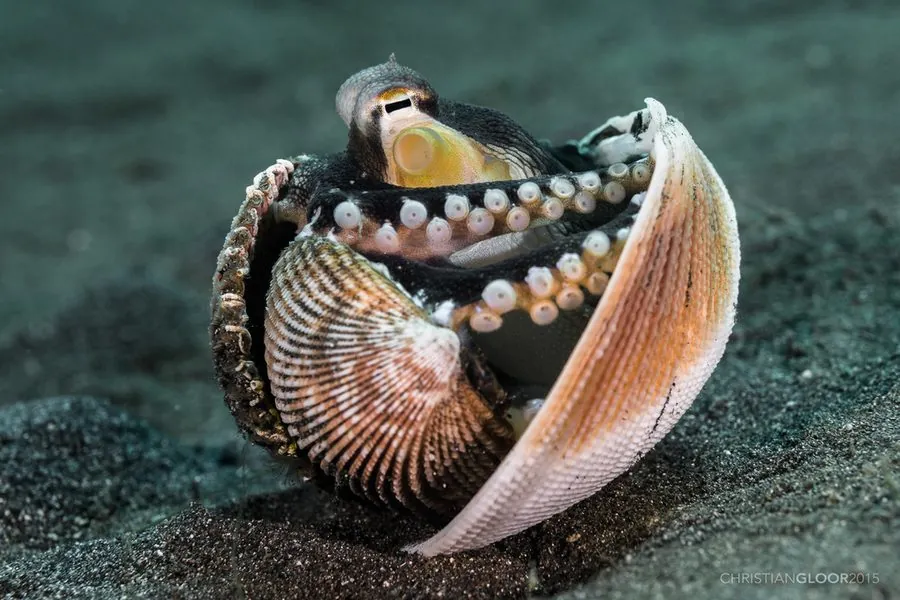

软体动物 · 动物界
椰子章鱼 Amphioctopus marginatus

会收集椰子壳和贝壳随身携带、需要时钻进去当庇护所的小型章鱼，是已知会使用工具的少数无脊椎动物之一。
- 分类
- 门软体动物门纲头足纲目八腕目科蛸科属蛸属
- 栖息环境
- 印度洋—西太平洋热带浅海的沙泥和礁石底质，水深 1–30 m
- 地理分布
- 印度尼西亚、菲律宾、马来西亚、澳大利亚北部和印度沿海
- 保护级别
- 暂无评估
物种志
椰子章鱼体型较小，外套膜长约 5–8 cm，连腕全长可达 30–40 cm。体色浅褐或灰黄，体表有网状纹理，腕足上有深色斑纹，看起来像树枝的纹路。
椰子章鱼分布于印度洋—西太平洋的热带浅海，包括印度尼西亚、菲律宾、马来西亚、澳大利亚北部和印度沿海，生活在水深 1–30 m 的沙泥和礁石底质。它是肉食性动物，捕食甲壳类、双壳类和小鱼。椰子章鱼最著名的行为是使用工具：它会收集掉落的椰子壳和空贝壳，把腕足收拢成“高跷”状走到别处，遇到危险就钻进去把自己盖住，甚至会把两个壳合起来当临时堡垒。2009 年，科学家首次在印度尼西亚海域记录到它搬运和使用椰子壳的行为，认为这属于真正意义上的工具使用，在无脊椎动物中十分罕见。目前它没有IUCN 的正式评估，中国未将其列入国家重点保护野生动物名录。
形态与习性
- 食性捕食甲壳类、双壳类和小鱼
- 体长外套膜约 5–8 cm，连腕全长可达 30–40 cm
- 栖息深度沙泥和礁石底质，水深 1–30 m
- 工具使用收集椰子壳和空贝壳，随身携带当庇护所
- 运动方式把腕足收拢成“高跷”状，带着壳行走
- 繁殖在壳内或洞穴中产卵并守护
趣味知识
- 椰子章鱼会捡起椰子壳和贝壳，用腕足“踩高跷”一样把壳搬走。
- 遇到危险时，它会钻进随身携带的壳里，把自己盖住。
- 2009 年科学家首次记录到它搬运和使用工具的行为，这在无脊椎动物中很少见。